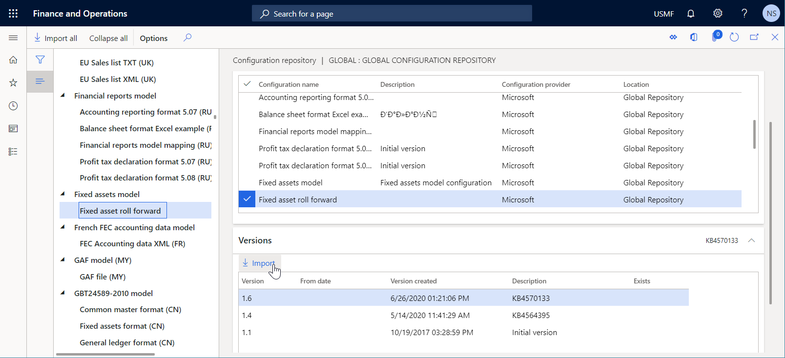
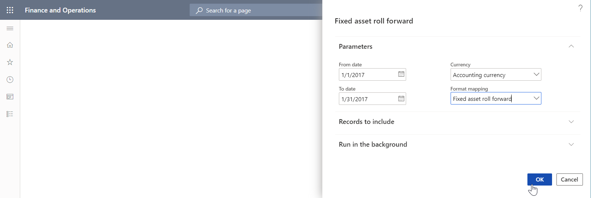

Benutzerdefinierte Speicherorte für generierte Dokumente angeben
[!include[banner](../includes/banner.md)]Mit der Anwendungsprogrammierschnittstelle (API) des Framework der elektronischen Berichterstellung (ER) können Sie die Liste der Speicherorte für Dokumente, die von ER-Formaten generiert werden, erweitern. In diesem Thema wird erläutert, wie Sie einen benutzerdefinierten Speicherort für generierte Dokumente hinzufügen, indem Sie die Aufgabe zum Erstellen von EB-Zielen an das Standardempfängerwerk delegieren und anschließend eine benutzerdefinierte Klasse mit eigener Ziellogik implementieren.
Voraussetzungen
Stellen Sie eine Topologie bereit, die einen fortlaufenden Build unterstützt. Weitere Informationen finden Sie unter Bereitstellen von Topologien, die fortlaufenden Build und Testautomatisierung unterstützen Sie unter. Sie müssen für eine der folgenden Rollen Zugriff auf diese Topologie haben:
- Entwickler für elektronische Berichterstellung
- Funktionaler Berater für elektronische Berichterstellung
- Systemadministrator
Sie müssen zudem Zugriff auf die Entwicklungsumgebung für diese Topologie haben.
Alle Aufgaben in diesem Thema können im USMF-Unternehmen erledigt werden.
EB-Format „Rollforward für Anlagen“ importieren
Um die Dokumente zu generieren, für die Sie einen benutzerdefinierten Speicherort hinzufügen möchten, importieren Sie das EB-Format Rollforward für Anlagen in die aktuelle Topologie.

Bericht „Rollforward für Anlagen“ ausführen
- Wechseln Sie zu Anlage > Anfragen und Berichte > Transaktionsberichte > Rollforward für Anlagen.
- Geben Sie im Feld Von Datum das Datum 1/1/2017 (1. Januar 2017) ein.
- Geben Sie im Feld Bis Datum das Datum 1/31/2017 (31. Januar 2017) ein.
- Wählen Sie im Feld Währung die Option Buchhaltungswährung aus.
- Wählen Sie im Feld Formatzuordnung die Option Rollforward für Anlagen aus.
- Wählen Sie OK.

Überprüfen Sie in Microsoft Excel das ausgehende Dokument, das generiert wurde und zum Download zur Verfügung steht. Dieses Verhalten ist das Standardverhalten für ein EB-Format, für das keine Ziele konfiguriert sind und das im interaktiven Modus ausgeführt wird.
Quellcode überprüfen
Überprüfen Sie den Code der generateReportByGER()-Methode der Klasse AssetRollForwardService. Beachten Sie, dass die Run()-Methode verwendet wird, um das EB-Framework aufzurufen und den Bericht Rollforward für Anlagen zu generieren.
class AssetRollForwardService extends SysOperationServiceBase
{
public const str ERFormatModelName = 'Fixed assets';
public const str ERModelDataSourceName = 'model';
public const str DefaultExportedFileName = 'AssetRollForward';
/// <summary>
/// Generates report by general electronic reporting
/// </summary>
/// <param name = "_contract">The Asset Period Statement contract</param>
public void generateReportByGER(AssetRollForwardContract _contract)
{
ERFormatMappingId formatMappingId;
AssetRollForwardDP dataProvider;
AssetRollForwardTmp assetRollForwardTmp;
Query query;
query = new Query(SysOperationHelper::base64Decode(_contract.parmQuery()));
dataProvider = AssetRollForwardDP::construct();
formatMappingId = _contract.parmFormatMapping();
assetRollForwardTmp = dataProvider.getAssetRollForwardTmp(_contract, query);
if (assetRollForwardTmp)
{
try
{
ERIModelDefinitionParamsAction parameters = new ERModelDefinitionParamsUIActionComposite()
.add(new ERModelDefinitionDatabaseContext().addTemporaryTable(assetRollForwardTmp))
.add(new ERModelDefinitionObjectParameterAction(ERModelDataSourceName, 'MyParameters', _contract, true));
// Call ER to generate the report.
ERObjectsFactory::createFormatMappingRunByFormatMappingId(formatMappingId, DefaultExportedFileName)
.withParameter(parameters)
.withFileDestination(_contract.getFileDestination())
.run();
}
catch
{
// An error occurred while exporting data.
error("@SYP4861341");
}
}
else
{
// There is no data available.
info("@SYS300117");
}
}
}
Quellcode ändern
Fügen Sie in Ihrem Visual Studio-Projekt eine neue Klasse hinzu (in diesem Beispiel
AssetRollForwardDestination) und schreiben Sie Code, um Ihr benutzerdefiniertes Ziel für die Berichte Rollforward für Anlagen zu implementieren, die generiert werden.- Die
new()-Methode dient zum Abrufen des ursprünglichen EB-Zielobjekts und des von der Anwendungslogik gesteuerten Parameters, der den benutzerdefinierten Speicherort angibt, an dem generierte Berichte gespeichert werden sollen. In diesem Beispiel ist der benutzerdefinierte Speicherort der Name eines Ordners des lokalen Dateisystems auf dem Server, auf dem der AOS-Dienst (Application Object Server) ausgeführt wird. - Die
saveFile()-Methode dient zum Speichern eines generierten Dokuments in einem Ordner des lokalen Dateisystems auf dem Server, auf dem der AOS-Dienst ausgeführt wird.
using Microsoft.Dynamics365.LocalizationFramework; /// <summary> /// Destination class for <c>AssetRollForwardDestinationFactory</c> that stores a generated report. /// </summary> public class AssetRollForwardDestination implements ERIFileDestination { private ERIFileDestination originDestination; private str TargetFolder; /// <summary> /// Creates a stream for new file. /// </summary> /// <param name = "_fileName">Name of a new file.</param> /// <returns>Stream for new file.</returns> public System.IO.Stream newFileStream(System.String _fileName) { return originDestination.newFileStream(_fileName); } /// <summary> /// Saves file in destination. /// </summary> /// <param name = "_stream">A stream to save.</param> /// <param name = "_fileName">A file name.</param> /// <returns>Saved stream.</returns> public System.IO.Stream saveFile(System.IO.Stream _stream, System.String _fileName) { _stream.Seek(0, System.IO.SeekOrigin::Begin); using (var localStream = System.IO.File::OpenWrite(TargetFolder + _fileName)) { _stream.CopyTo(localStream); } return _stream; } /// <summary> /// Constructs destination for fixed asset roll forward report. /// </summary> /// <param name = "_originDestination">The original destination.</param> /// <param name = "_TargetFoder">The folder to store a report that's being created.</param> /// <returns>The fixed asset roll forward destination.</returns> public static AssetRollForwardDestination construct(ERIFileDestination _originDestination, str _TargetFoder) { return new AssetRollForwardDestination(_originDestination, _TargetFoder); } protected void new(ERIFileDestination _originDestination, str _TargetFoder) { originDestination = _originDestination; TargetFolder = _TargetFoder; } }- Die
Fügen Sie in Ihrem Visual Studio-Projekt eine neue Klasse hinzu (in diesem Beispiel
AssetRollForwardDestinationFactory) und schreiben Sie Code, um ein benutzerdefiniertes Empfängerwerk einzurichten, das die Erstellung eines Ziels an das Standardempfängerwerk delegiert, und um ein Dateiziel mit Ihrem eigenen Ziel zu versehen.using Microsoft.Dynamics365.LocalizationFramework; using Microsoft.Dynamics365.LocalizationFramework.Format.FileGeneration; /// <summary> /// Destination factory for using <c>AssetRollForwardDestinationFactory</c>. /// </summary> public class AssetRollForwardDestinationFactory implements ERIFileDestinationFactory, ERIFileDestinationFactoryPostProcessor { private ERIFileDestinationFactory originDestinationFactory; private str TargetFolder; /// <summary> /// Creates file destination for print management. /// </summary> /// <param name = "_fileDestination">A default file destination.</param> /// <param name = "_identification">An identification strategy.</param> /// <param name = "_rootContext">A root context.</param> /// <param name = "_root">A root element.</param> /// <returns>A file destination.</returns> public ERIDataDrivenFileDestination createPrintMgmtDestination( ERIFileDestination _fileDestination, ERIObjectIdentificationStrategy _identification, ERTextFormatDataContext _rootContext, ERTextFormatIFileComponent _root) { ERIDataDrivenFileDestination dataDrivenDestination = originDestinationFactory.createPrintMgmtDestination( _fileDestination, _identification, _rootContext, _root); IFileDestinationHost fileDestinationHost = dataDrivenDestination as IFileDestinationHost; if (fileDestinationHost) { fileDestinationHost.FileDestination = AssetRollForwardDestination::construct( fileDestinationHost.get_FileDestination(), TargetFolder); } return dataDrivenDestination; } /// <summary> /// Constructs the fixed asset roll forward destination factory. /// </summary> /// <param name = "_originDestinationFactory">The original destination.</param> /// <param name = "_TargetFolder">The string containing a folder name that corresponds to the report, that's being created.</param> /// <returns>The destination factory for the fixed asset roll forward report.</returns> public static AssetRollForwardDestinationFactory construct(ERIFileDestinationFactory _originDestinationFactory, str _TargetFolder) { AssetRollForwardDestinationFactory destinationFactory = new AssetRollForwardDestinationFactory(_originDestinationFactory, _TargetFolder); ERIFileDestinationFactoryPostProcessorsHost factoryPostProcessing = ERCast::asObject(destinationFactory.originDestinationFactory) as ERIFileDestinationFactoryPostProcessorsHost; if (factoryPostProcessing) { factoryPostProcessing.addDestinationPostProcessor(destinationFactory); } return destinationFactory; } public ERIFileDestination processDestinationAfterCreation(ERIFileDestination _sourceDestination) { return AssetRollForwardDestination::construct(_sourceDestination, TargetFolder); } protected void new(ERIFileDestinationFactory _originDestinationFactory, str _TargetFolder) { originDestinationFactory = _originDestinationFactory; TargetFolder = _TargetFolder; } }Ändern Sie die vorhandene Klasse
AssetRollForwardServiceund schreiben Sie Code, um ein benutzerdefiniertes Empfängerwerk für die Berichtsausführung einzurichten. Beachten Sie, dass beim Erstellen eines benutzerdefinierten Empfängerwerks der anwendungsgesteuerte Parameter, der einen Zielordner angibt, übergeben wird. Auf diese Weise wird dieser Zielordner zum Speichern generierter Dateien verwendet.Note
Stellen Sie sicher, dass der angegebene Ordner (in diesem Beispiel c:\0) im lokalen Dateisystem des Servers vorhanden ist, auf dem der AOS-Dienst ausgeführt wird. Ansonsten wird zur Laufzeit eine DirectoryNotFoundException-Ausnahme ausgelöst.
using Microsoft.Dynamics365.LocalizationFramework; /// <summary> /// The electronic reporting service class for fixed asset roll forward report /// </summary> class AssetRollForwardService extends SysOperationServiceBase { public const str ERFormatModelName = 'Fixed assets'; public const str ERModelDataSourceName = 'model'; public const str DefaultExportedFileName = 'AssetRollForward'; /// <summary> /// Generates report by general electronic reporting /// </summary> /// <param name = "_contract">The Asset Period Statement contract</param> public void generateReportByGER(AssetRollForwardContract _contract) { ERFormatMappingId formatMappingId; AssetRollForwardDP dataProvider; AssetRollForwardTmp assetRollForwardTmp; Query query; query = new Query(SysOperationHelper::base64Decode(_contract.parmQuery())); dataProvider = AssetRollForwardDP::construct(); formatMappingId = _contract.parmFormatMapping(); assetRollForwardTmp = dataProvider.getAssetRollForwardTmp(_contract, query); if (assetRollForwardTmp) { try { ERIModelDefinitionParamsAction parameters = new ERModelDefinitionParamsUIActionComposite() .add(new ERModelDefinitionDatabaseContext().addTemporaryTable(assetRollForwardTmp)) .add(new ERModelDefinitionObjectParameterAction(ERModelDataSourceName, 'MyParameters', _contract, true)); // Call ER to generate the report. ERIFormatMappingRun formatMappingRun = ERObjectsFactory::createFormatMappingRunByFormatMappingId(formatMappingId, DefaultExportedFileName); formatMappingRun.withParameter(parameters); formatMappingRun.withFileDestination(_contract.getFileDestination()); ERIFileDestinationFactoryHost factoryHost = ERCast::asObject(formatMappingRun) as ERIFileDestinationFactoryHost; if (factoryHost) { ERIFileDestinationFactory fileDestinationFactory = factoryHost.getFileDestinationFactory(); factoryHost.setFileDestinationFactory(AssetRollForwardDestinationFactory::construct(fileDestinationFactory, @'c:\0\')); formatMappingRun.run(); } } catch { // An error occurred while exporting data. error("@SYP4861341"); } } else { // There is no data available. info("@SYS300117"); } } }Ihr Projekt neu erstellen
Bericht „Rollforward für Anlagen“ erneut ausführen
- Wechseln Sie zu Anlage > Anfragen und Berichte > Transaktionsberichte > Rollforward für Anlagen.
- Geben Sie im Feld Von Datum den Wert 1/1/2017 ein.
- Geben Sie im Feld An Datum den Wert 1/31/2017 ein.
- Wählen Sie im Feld Währung die Option Buchhaltungswährung aus.
- Wählen Sie im Feld Formatzuordnung die Option Rollforward für Anlagen aus.
- Wählen Sie OK.
- Suchen Sie im lokalen Ordner C:\0 dies generierte Datei.
Note
Weil das originDestination-Objekt im AssetRollForwardDestination-Objekt in diesem Beispiel nicht verwendet wird, werden die Konfigurationen für die Ziele des EB-Formats zur Laufzeit ignoriert.